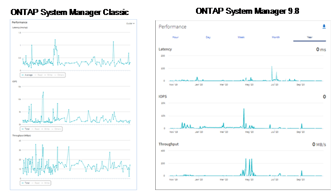
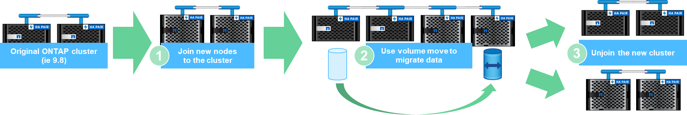

Présentation des fonctionnalités de NetApp ONTAP 9.9.1
Présentation des fonctionnalités de NetApp ONTAP 9.9.1
Amélioration de la simplicité
 Suggérer des modifications
Suggérer des modifications
Cette section décrit les améliorations apportées à ONTAP 9.8 en matière de simplicité. Ceci inclut les éléments suivants :
-
Mises à jour de ONTAP System Manager
-
Améliorations des mises à niveau et des mises à jour technologiques de ONTAP
-
Améliorations des API REST
Améliorations apportées à System Manager
ONTAP 9.7 a introduit une refonte de l’interface graphique de System Manager dans le but de simplifier la gestion des opérations de base ONTAP par les administrateurs, comme le provisionnement du stockage et les opérations quotidiennes. La nouvelle interface graphique exploite également les API REST, ajoutées à ONTAP 9.6. Dans ONTAP 9.8, la vue classique de System Manager a été supprimée.
L’une des principales différences entre les interfaces est le tableau de bord, qui est la première page à laquelle vous accédez lors de la première connexion à NetApp ONTAP System Manager.
Les graphiques suivants illustrent une comparaison côte à côte des versions classiques et nouvelles du tableau de bord de System Manager.

Lorsque nous regardons de plus près, nous pouvons voir quelques différences majeures.
Santé/alertes
Lorsque vous vous connectez à Classic System Manager pour la première fois, le coin supérieur gauche présente une liste des défaillances de cluster et de nœud. Vous les trouverez également dans les liens cliquables. Lorsque vous cliquez sur l’un des liens, vous êtes redirigé vers une autre page de System Manager.
Vous aviez également une zone distincte qui affiche l’état haute disponibilité du cluster pour voir si un nœud a échoué. Dans les images suivantes, nous voyons la vue du tableau de bord et ce que nous voyons lorsque nous cliissons sur l’un des liens―dans ce cas, nos disques défaillants.

Pour afficher d’autres alertes, vous devez revenir au tableau de bord, qui prend du temps et requiert plus de clics. L’un des objectifs de la nouvelle vue de System Manager est de simplifier ce processus.
La figure suivante montre le nouveau tableau de bord de System Manager. Les deux principales différences qui distinguent les vues d’état et d’alertes sont désormais que l’état HA du nœud ainsi que les alertes sont disponibles dans la même fenêtre. Elles ne s’affichent plus dans le tableau de bord principal et ne sont plus disponibles dans une zone déroulante.

Vues de capacité
Des clics supplémentaires sont également réduits pour les vues de capacité. Dans ONTAP System Manager classique, les ratios de capacité et d’efficacité du stockage ont été trouvés dans la section Présentation du cluster. Des onglets étaient disponibles pour trouver des informations. La nouvelle vue de System Manager consolide les vues des ratios d’efficacité du stockage et de la capacité dans un graphique unique.

|
La nouvelle interface utilisateur exploite l’espace logique utilisé et l’espace physique disponible. |

Les vues de protection des données ont été transférées vers leur propre tableau de bord sous protection. Cette page décrit plus en détail la protection des données dans le cluster et fournit des informations permettant d’exploiter la nouvelle continuité de l’activité SnapMirror (SM-BC).

Visualisation du réseau
ONTAP System Manager 9.8 supprime également la vue application et objets en faveur d’une nouvelle vue de visualisation réseau qui montre la topologie réseau du cluster, ainsi que des X rouges lorsqu’un port est en panne.

Vues de performances
Les graphiques de performances de System Manager conservent désormais les données du cluster jusqu’à un an, plutôt que de disposer des données de performance de System Manager classiques uniquement lorsque vous êtes connecté. Dans ONTAP System Manager 9.8, vous pouvez désormais cliquer sur l’heure, le jour, la semaine, le mois ou l’année. Il existe également un moyen de télécharger les données de performances vers un CSV.

Analytique du système de fichiers
Dans les environnements comportant un grand nombre de fichiers, pour rechercher des informations sur la capacité des dossiers, l’ancienneté des données et le nombre de fichiers, il est généralement nécessaire que les commandes ou scripts exécutés en série sur des protocoles NAS, tels que ls, du, find, et stat.
Grâce à ONTAP System Manager 9.8, les administrateurs peuvent rapidement et facilement consulter les informations relatives aux systèmes de fichiers dans n’importe quel volume de stockage NAS grâce à un scanner à faible impact pour chaque volume. Ce scanner explore le système de fichiers ONTAP en arrière-plan avec un travail à priorité faible et fournit de nombreuses informations disponibles dès que vous naviguez vers un volume dans System Manager 9.8 ou version ultérieure.
L’activation de File Systems Analytics est aussi simple que de naviguer jusqu’au volume que vous voulez numériser. Accédez à Storage > volumes, puis utilisez la recherche pour trouver le volume souhaité. Cliquez sur le volume, puis sur l’onglet Explorateur.
À partir de là, vous voyez le lien Activer l’analyse sur le côté droit de la page.

Une fois que vous avez cliqué sur activé, le scanner démarre. L’heure d’achèvement dépend du nombre d’objets du volume, ainsi que de la charge du système. Lorsque la procédure est terminée, l’ensemble de la structure de répertoires s’affiche dans la vue System Manager. Cette vue peut être navigue dans l’arborescence des répertoires et fournit des informations sur l’historique, la taille des répertoires et la taille des fichiers.
La figure suivante présente des vues du volume Tech_ONTAP de mon cluster, pour lequel je sert d’archive "Épisodes des podcasts NetApp Tech OnTap".

Lorsque vous cliquez sur un dossier, une liste de fichiers s’affiche à droite de la page.

Si vous choisissez, vous pouvez activer Afficher l’heure d’accès pour voir la dernière fois qu’un fichier a été accédé.

Au bas de la page, vous pouvez voir combien de données n’ont pas été utilisées au cours d’une année, ainsi que le nombre de répertoires et de fichiers dans ce dossier.

Outre la recherche rapide de tailles de fichiers et d’informations sur le répertoire, cette fonction fournit également des informations qui vous aideront à déterminer si la technologie NetApp FabricPool peut s’avérer efficace afin de réduire la quantité de données inactives qui occupent de l’espace dans vos agrégats.
Clients NFS actifs
ONTAP 9.7 a introduit un moyen de voir les clients NFS qui accédiez à des volumes spécifiques dans un cluster, ainsi que les adresses IP de la LIF de données utilisées avec le nfs connected-clients commande. Cette commande est traitée en détail dans "Tr-4067 : Guide des meilleures pratiques et de l’implémentation de NetApp ONTAP pour NFS". Cette commande s’avère utile pour déterminer les clients associés au système de stockage, comme les mises à niveau, les mises à jour technologiques ou la création de rapports simple.
ONTAP System Manager 9.8 vous permet de consulter l’interface utilisateur graphique de ces clients et d’exporter la liste vers un fichier .csv. Accédez à hosts > clients NFS et la liste des clients NFS actifs au cours des 48 dernières heures s’affiche.

Autres améliorations apportées à System Manager 9.8
ONTAP 9.8 apporte également les améliorations suivantes à System Manager :
|
|
La figure suivante présente les mises à jour du micrologiciel MetroCluster et en un seul clic.

Améliorations des API REST
La prise en charge des API REST, ajoutée dans ONTAP 9.6, permet aux administrateurs du stockage de valoriser les appels d’API standard vers le stockage ONTAP dans leurs scripts d’automatisation, sans avoir à interagir avec l’interface de ligne de commande ou l’interface utilisateur graphique.
Grâce à System Manager, la documentation ET les exemples DE l’API REST sont disponibles. Il vous suffit d’accéder à l’interface de gestion du cluster à partir d’un navigateur web et d’ajouter docs/api À l’adresse (via HTTPS).
Par exemple :
Cette page fournit un glossaire interactif des API REST disponibles, ainsi qu’une méthode permettant de générer vos propres requêtes API REST.

Dans ONTAP 9.8, les API REST sont désormais annotées, quelle version ils ont été ajoutées, ce qui simplifie la vie lorsque vous essayez de travailler sur plusieurs versions d’ONTAP.

Le tableau suivant fournit la liste des nouvelles API REST dans ONTAP 9.8.
Cluster * Historique du micrologiciel * Licence de cluster – pools de capacité * Licence de cluster – gestionnaires de licences * métriques de nœud * téléchargement d’images logicielles MetroCluster * Mediator * Diagnostics * gestion/création * groupes DR * interconnexions * nœuds * opérations * mise en réseau * métriques de port Ethernet * informations de port de commutateur * commutateur Informations * mesures de l’interface FC * groupes de pairs BGP * mesures de l’interface IP * stratégies de service LIF mesures de protocole NVMe SAN * |
Sécurité * mode FIPS activation/désactivation * chiffrement des données activation/désactivation * coffres-forts de clés Azure * Google GCP-KMS * IP sec stockage * copie/déplacement de fichiers * NetApp FlexCache® PATCH/modification * fichiers surveillés * règles d’efficacité du stockage * gestion des fichiers et des répertoires (suppression asynchrone, QoS et analyse des systèmes de fichiers) NAS * redirection du journal d’audit * sessions CIFS * suivi de l’accès aux fichiers/suivi de la sécurité gérer * correction des événements magasin d’objets/S3 * gestion des compartiments S3 * groupes S3 * règles S3 |
Pour plus d’informations sur les mises à jour de System Manager dans ONTAP 9.8, consultez le "Épisode 266 du podcast Tech OnTap : NetApp ONTAP System Manager 9.8".
Améliorations apportées aux mises à niveau et aux mises à jour technologiques – ONTAP 9.8
Jusqu’à présent, les mises à niveau ONTAP devaient s’effectuer sans interruption dans une ou deux versions majeures. Pour les administrateurs de stockage qui ne mettent pas à niveau fréquemment, il devient un casse-tête majeur et un cauchemar en matière logistique quand il est finalement temps de mettre à niveau ONTAP. Qui veut effectuer une mise à niveau et un redémarrage plusieurs fois dans une fenêtre de maintenance ?
ONTAP 9.8 prend désormais en charge les mises à niveau vers les versions ONTAP dans une période de deux ans. Par conséquent, si vous voulez effectuer une mise à niveau de la version 9.6 vers la version 9.8, vous pouvez le faire directement sans avoir à passer à ONTAP 9.7.
Le tableau suivant présente une matrice pour les mises à niveau de NetApp ONTAP.
| Point de départ | Mise à niveau directe vers : |
|---|---|
ONTAP 9.6 |
ONTAP 9.7, ONTAP 9.8 |
ONTAP 9.7 |
ONTAP 9.8, ONTAP 9.n+2 |
ONTAP 9.8 |
ONTAP 9.n+1, ONTAP 9.n+2 |
Ce processus de mise à niveau simplifié permet également de rationaliser les mises à niveau des têtes. La dernière version d’ONTAP est installée lorsqu’un nouveau nœud matériel est livré. Dans les versions antérieures, si votre cluster existant exécutait une version plus ancienne de ONTAP, vous deviez mettre à niveau les nœuds existants vers la même version de ONTAP que le nouveau nœud ou revenir à une version antérieure du nouveau nœud vers l’ancienne version de ONTAP. Si la mise à niveau du matériel le plus récent ne peut pas être effectuée, vous avez dû installer une fenêtre de maintenance pour mettre à niveau le cluster existant.
Avec la fenêtre de versions mixtes de deux ans d’ONTAP, il est désormais possible d’ajouter à un cluster de nouveaux nœuds exécutant des versions plus récentes de ONTAP pour permettre les mises à jour des contrôleurs en déplaçant les volumes des nœuds exécutant entre 9.8 et des versions plus élevées de ONTAP. Cette procédure de transfert d’agrégats sans interruption permet également de mettre à niveau le contrôleur de systèmes qui doivent exécuter ONTAP 9.8 (par exemple, les systèmes 8000-series) vers de nouveaux modèles introduits dans les versions ultérieures d’ONTAP.
Il est recommandé de limiter le temps de fonctionnement du cluster ONTAP avec un état de version mixte.

Ce processus s’étend également aux mises à niveau du cluster, où vous voulez remplacer une paire haute disponibilité complète à partir d’un cluster. Avec la fenêtre de révision de 2 ans de ONTAP 9.8 et le déplacement des volumes sans interruption, cela est désormais possible.
Les étapes de base sont les suivantes :
-
Connexion des nouveaux systèmes à un cluster existant, avec des versions ONTAP disponibles dans une fenêtre de 2 ans.
-
Déplacement de volumes sans interruption pour effectuer la migration des nœuds.
-
Dissocier les anciens nœuds du cluster.
